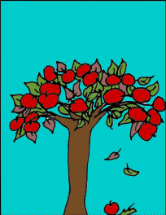

De Appel valt niet ver van de Boom
"De appel valt niet ver van de boom" wordt gebruikt om aan te geven dat kinderen vaak eigenschappen, gedragingen of talenten delen met hun ouders. Het impliceert dat er overeenkomsten zijn tussen ouders en hun kinderen.
Oorsprong
De oorsprong van dit spreekwoord ligt in het idee dat fruit dat van een boom valt meestal dicht bij de boom terechtkomt, vanwege zwaartekracht en windrichting. Op dezelfde manier worden eigenschappen of gedragingen vaak doorgegeven van ouders op kinderen.
Gebruik
Dit spreekwoord wordt vaak gebruikt om aan te geven dat kinderen veel gemeen hebben met hun ouders, zowel qua uiterlijk als gedrag. Het wordt meestal gebruikt in informele gesprekken.
Voorbeelden
- Het is duidelijk dat Lucas ook een passie voor muziek heeft, de appel valt niet ver van de boom!
- Zijn vader was een getalenteerde schilder, en de appel valt niet ver van de boom, want hij heeft ook een groot artistiek talent.
Vertalingen
Hoewel dit spreekwoord specifiek is voor de Nederlandse taal, zijn er vergelijkbare uitdrukkingen in andere talen. In het Engels wordt soms gezegd: like father, like son (zo vader, zo zoon).